
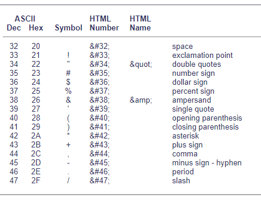

Domain Name
A domain name is the name of a website. Users access a website using the address of the Domain name. All computers use IP addresses, which are a series of numbers separated by decimals (eg. 192.168.1.1). Since it is quite hard to remember the exact IP Address of a website, domain names were developed to create simple names for the websites instead of using the IP address. For example, the IP address of google is 216.58.206.78, but we access the website using its much more common Domain name – google.com. A domain name can have a variety of letters and numbers and is used in different types of domain name extensions such as .net, .com, .org, .edu, etc.
Note: To avoid confusion, no 2 websites can have the same domain name.
Packet switching
Packet switching is the method used to send data (in the form of packets) across a local or a long-distance connection. The digital information gets broken down into smaller parts called packets that may have to change directions to the destination depending on congestion (traffic of internet), in order to reach the same destination. Because of this they may arrive at the same destination at different times or even in an unordered manner. Once all the packets arrive at the destination, they are re-ordered before the network device or computer receives it. In simpler terms, Packet switching is the way packets travel to reach their destination.

URL
When surfing on the internet, it is much easier to type in the URL of a website rather than typing in it's long IP address. Abbreviated as Uniform Resource Locator, a url is a web address used to connect to a website on the world wide web.
A URL can be broken down into 5 major parts:
- Protocol - either http, https or ftp
- Subdomain - the "www" part of a website
- Second Level Domain - the name of the website
- Top Level Domain - part of the domain name that comes after the dot. For example google.com
- Subdirectory - if there are multiple pages on a website, the subdirectory is a page inside the main page.
FTP
File Transfer Protocal is a protocol that allows the transferring files between two computers on the Internet. If you want to access, upload or download information on a server computer (or a computer that accesses a server computer), FTP software makes that information access or transfer possible.

Cookie
HTTP Cookies - otherwise known as web cookies or simply cookies, is a way of communication between the web browser and the server where the information is stored as text files. Web sites use cookies to recognize users who have previously visited them. The next time the user accesses that site, the information in the cookie is sent back to the site so the information displayed can vary depending on the user’s preferences. Cookies are not a security risk because they only store information that came from the web site or was sent to it by the user.
Hypertext
Hypertext is text on a webpage that links to another document or webpage. The hypertext link can be as small as a letter or word, or as big as all the text on the page. Hypermedia is a type of hypertext which is not text. It consists of images (graphics), videos and audio.

ASCII
ASCII (American Standard Code for Information Interchange) a standard code for representing characters as numbers that is used on most microcomputers, computer terminals, and printers. In addition to printable characters, the ASCII code includes control characters to indicate carriage return, backspace, etc. The information represented in the table below is only an example of what ASCII looks like (Not all the ASCII symbols are included).

SMTP
SMTP (Simple Mail Transfer Protocol) is a protocol that allows the user to send an email to a mail server. It is used to send the email from an email client to the email provider mail server and send the email between two mail servers on the internet.
Series & Parallel
Parallel means that more than one event is happening at a time. Serial means that only one event is happening at a time. For example, let's say that we need to make 10 sandwiches. When making these sandwiches in series, the sandwiches are made one by one in a systematic order. When these sandwiches are made in parallel, all 10 of them are being made at the same time, thus making them faster.